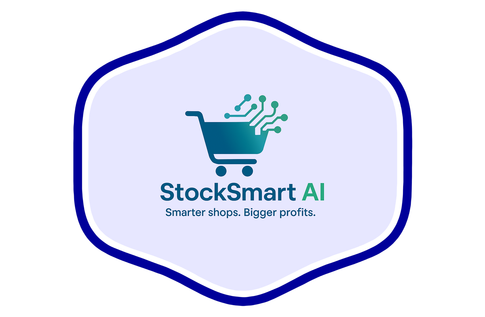

How SmartShop AI Supports Retail Success
SmartShop AI brings artificial intelligence into your retail business to help you work smarter, not harder.
- Better Stock Control: Order exactly what you need—no overstock, no empty shelves.
- Smart Pricing: Set prices that attract customers and maximize profit.
- Trend Prediction: Spot what’s hot before it’s too late.
- Time Saving: Automate analysis and get your time back for customers and creativity.
You stay in charge—AI just works quietly in the background to make your shop thrive.
Learn More
📚 Academic:
Review on AI in Retail Decision-Making
🏢 Enterprise:
IBM's Guide to AI in Retail
🛍️ Small Biz:
Shopify's AI Tips for Retail Growth
🔙 Back to Home